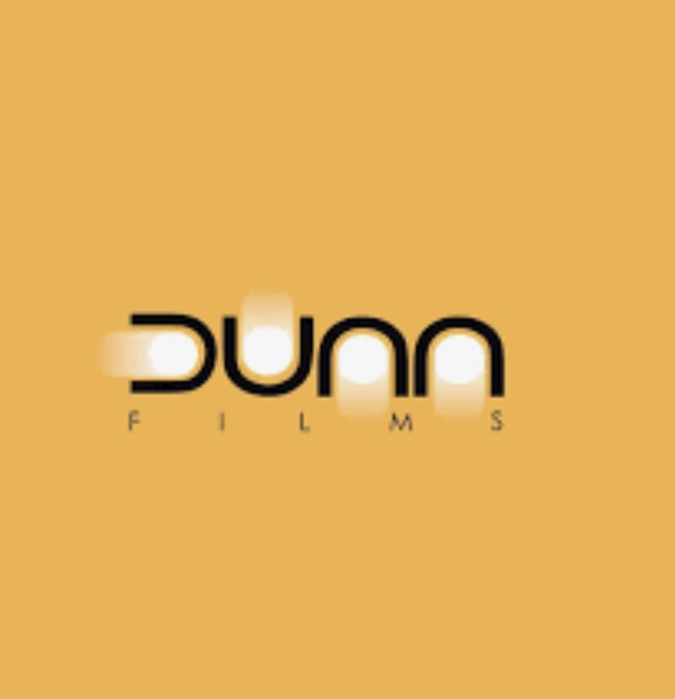
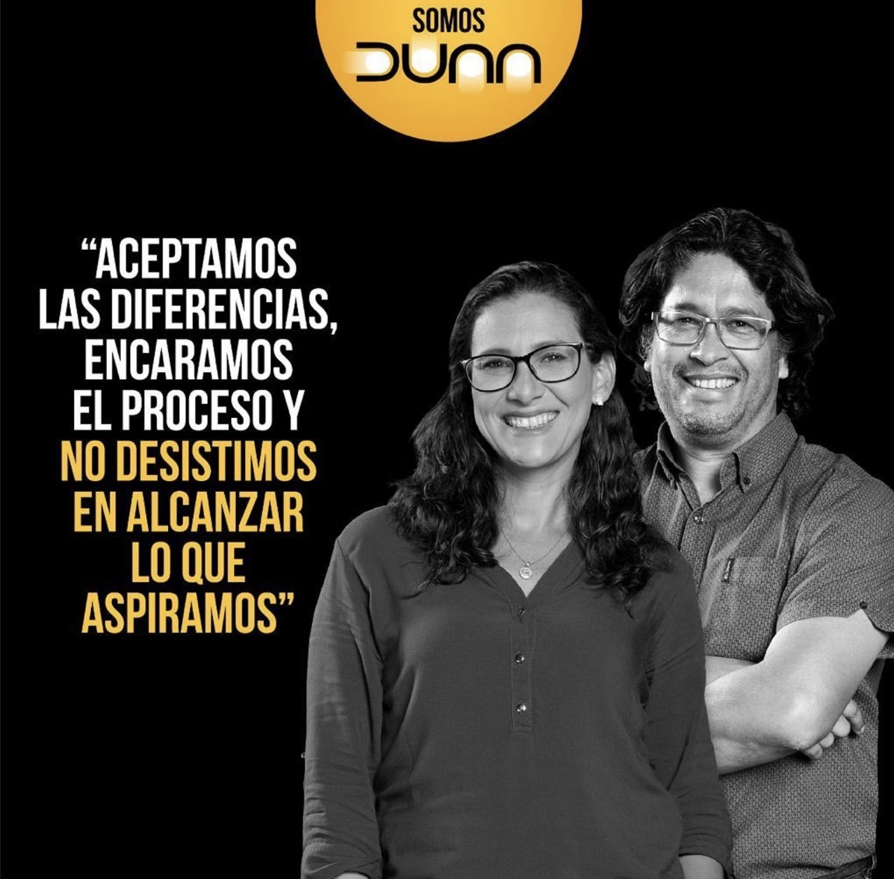
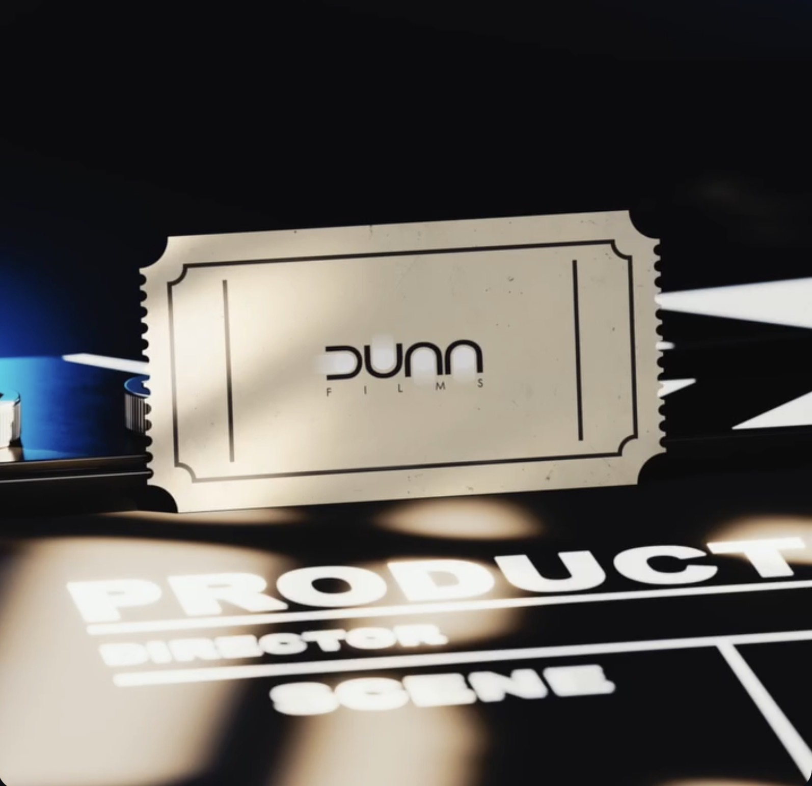

Publicidad y comerciales
Piezas audiovisuales para comunicar productos, servicios e ideas de marca.
↗
PRODUCTORA AUDIOVISUAL · GUAYAQUIL, ECUADOR
Convertimos ideas en experiencias audiovisuales a través de creatividad, narrativa y producción.

DUNN FILMS es una productora audiovisual con trayectoria en el desarrollo y realización de contenidos para distintos formatos y propósitos.
Desde la construcción de un concepto y la escritura de guiones hasta la dirección, grabación y postproducción, cada etapa forma parte de una misma visión: contar historias con intención.
DUNN FILMS · DETRÁS DE CÁMARAS

De la primera idea a la pieza final, trabajamos en las distintas etapas que convierten un concepto en contenido audiovisual.
Piezas audiovisuales para comunicar productos, servicios e ideas de marca.
↗Desarrollo de conceptos y realización de proyectos desde la planificación hasta la grabación.
↗Construcción narrativa, escritura de guiones y dirección creativa para contar cada historia.
↗Postproducción y recursos visuales que dan forma y ritmo al resultado final.
↗Producción de programas y piezas audiovisuales para medios y formatos televisivos.
↗Cuéntanos qué tienes en mente. Podemos ayudarte a darle forma.
Hablemos ↗EXPERIENCIA SELECCIONADA — 01
Entre los proyectos asociados con DUNN FILMS figura En seña de la luna y el lobo, una propuesta educativa infantil que combinaba cuentos, gestos y lenguaje de señas.
DUNN FILMS participó en el desarrollo del concepto, los guiones, la dirección, la grabación, la edición y la animación.
CONTENIDO EDUCATIVO · AUDIOVISUALCada proyecto tiene su propio lenguaje. El proceso comienza escuchando, continúa construyendo y termina dando vida a la idea.
Entendemos el propósito, la audiencia y la historia que queremos contar.
Transformamos la idea en una propuesta narrativa y visual.
Coordinamos y realizamos el contenido audiovisual.
Editamos, afinamos y damos forma a la pieza final.
TRABAJOS Y COLABORACIONES
Hemos desarrollado proyectos audiovisuales para marcas y empresas de distintos sectores.
Y otras marcas y organizaciones.
RECONOCIMIENTOS
Una trayectoria creativa reconocida en festivales y espacios internacionales.
Reconocimiento internacional.
Plata · Director y productora.
04 / EMPECEMOS ALGO
Cuéntanos qué quieres crear. Estamos en Guayaquil, Ecuador.
Escríbenos ↗